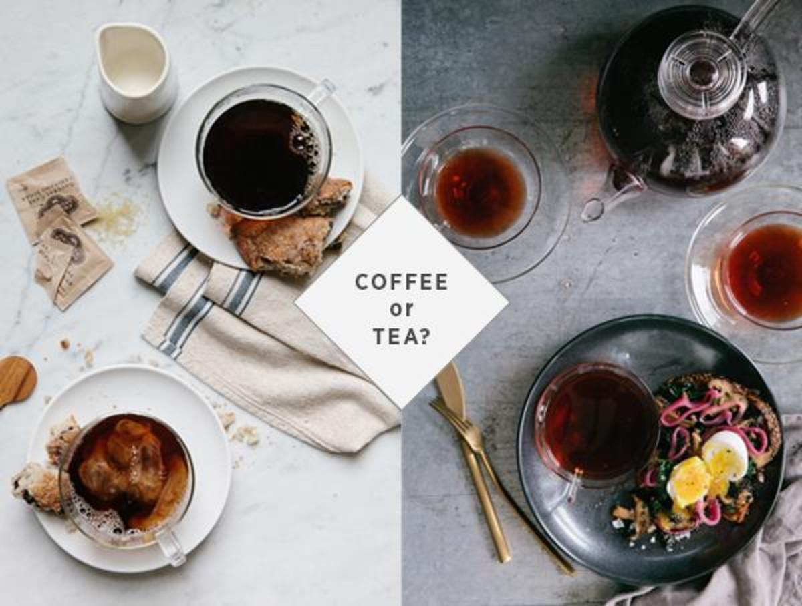
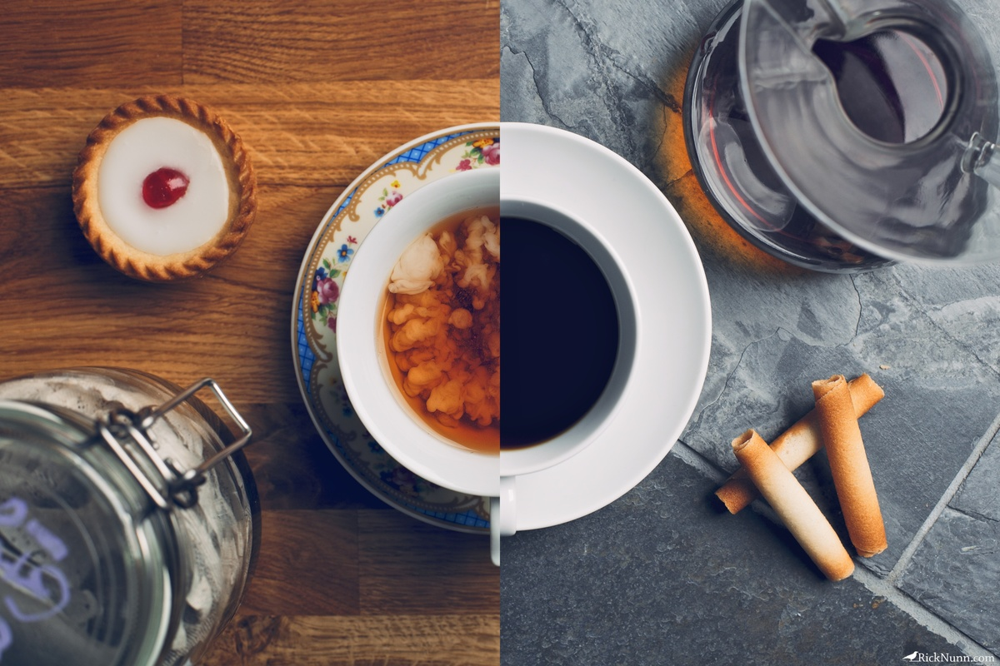

Що таке чай?
Хоч у всіх і на слуху традиційне англійське чаювання, проте в життя сучасної людини чай прийшов саме з Давнього Сходу.
За китайським легендам чайний кущ був відомий ще за часів створення неба і землі. Згідно з індійськими легендами, чай знайшов принц Бодхідхарма під час подорожі по Китаю. Японці ж розповідають трохи моторошну легенду про принца Дарума. Кажуть, щоб не засипати під час медитації, він просто вирвав свої повіки і кинув їх на землю. На місці, куди впали повіки, і виріс чайний кущ.
Досить довго чай був дорогим напоєм, і лише деякі верстви населення могли собі його дозволити. Завдяки серу Томасу Ліптон з кінця XIX в. чай почав активно поширюватися і ставати більш доступним для суспільства. Сер Ліптон придбав на о. Цейлон чайну плантацію і звідти почав поставки до Великобританії.
Що по каві?
Скажете щось?
Лаааадно,розповім
Історія і сорти кави
Батьківщиною кави вважають Ефіопію. Звідти він потрапив до Ємену, який довгий час залишався єдиним постачальником цього напою, що бадьорить. Араби ретельно охороняли секрет кави: як росте, готується, сушиться. На території Ємену діяв суворий заборона вивозу зерен, які були мало просушені. Такі заходи вживалися, щоб не допустити появи за межами країни хоча б одного зерна, яке може дати паросток.
Але, незважаючи на всі запобіжні заходи, до кінця XVII ст. кавове зерно потрапляє до Індії, а трохи пізніше - в Європу. А в XX в. кавові плантації з'являються вже в Південній Америці, Азії, Африці, Австралії.
У чому більше користі?
Чай
- Чудовий протизастудний, потогінний, жарознижуючий засіб.
- Відмінний антибактеріальний засіб. Не даючи розмножуватися шкідливим мікробам, допомагає ще й при розладах шлунку.
- Антиоксиданти (їх тут повно) борються зі старінням і зміцнюють імунітет.
- Пригальмовує процес потрапляння цукру в кров: профілактика діабету.
- Допомагає протистояти появі деяких видів раку.
Кава
- Покращує реакцію, працездатність, знижує ризик депресії.
- Допомагає зняти головний біль.
- Допомагає запобігти хворобі Альцгеймера.
- Покращує репродуктивну функцію у чоловіків.
У чому більше шкоди?
Чай
- Від чорного чаю жовтіють зуби, від зеленого руйнується емаль.
- "Вимиває" з організму потрібний магній. І привіт, втома, судоми.
- Через утворення сечовини сприяє відкладенню солей і каміння в нирках.
- Через півгодини в заварці починають утворюватися канцерогени.
- До чаю прийнято подавати солодощі, це збільшує кількість споживаного цукру.
Кава
- Сильно підвищує кислотність шлунку, тому ранкова кава замість сніданку - шлях до виразки.
- Серйозний сечогінний засіб: зневоднює організм. Тому до неї потрібно подавати воду.
- Заважає всмоктуванню корисних мікроелементів, наприклад, кальцію.
- Дає досить швидкий "стрибок" тиску вгору-вниз. Для не залізної серцево-судинної системи це удар.
- Кавування частіше пов'язане з курінням.
Що крутіше підзарядить?
Чай
- Кофеїн засвоюється з чаю більш повільно, поступово і "м'яко". В результаті чай дає замість короткочасного "вибуху" тривалий підйом.
- Пуер бадьорить і тонізує, а заодно і просвітлює мозок і душу.
Кава
- Якщо брати "сировину", то в чаї приблизно в 2 рази більше кофеїну. Але якщо порівнювати кількістьйого в середній чашці - то в каві його більше десь у три рази.
- По-справжньому бадьорить тільки перша чашечка, далі йде не підзарядка, а безрезультатний самообман.
Що популярніше і для кого?
Чай
- Спеціалізованих чайних закладів, де подають "правильний чай правильним чином", у нас набагато менше, ніж кав'ярень.
- Середньостатистичний любитель чаю - найчастіше людина відкрита, щира, "без подвійного дна".
Кава
- Звичайно, є круті чаї і демократичні кави, але якщо брати "середину", то пачка кави коштує дорожче, ніж пачка чаю.
- Вибір кавових закладів та кавових напоїв – ширший, ніж чайних.
- Ви часто бачите людей, що поспішають кудись або зависають під офісним центром зі стаканчиком чаю? А з кавою - маса!
- Типовий любитель кави - зазвичай творча натура, естет і креативщик.
А взагалі найбільш гармонійна особистість - це, напевно, та, яка в залежності від настрою і обставин насолоджується і тим, й іншим. Є й такі, котрі експериментують, змішуючи одне й інше, отримуючи напій "Чако"... Тільки не намагайтеся повторити це вдома ;)
